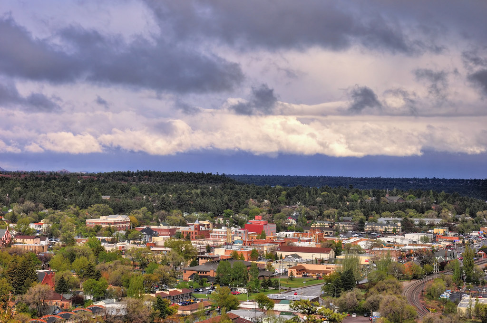

Flagstaff, Arizona

Flagstaff is a city in Northern Arizona with a population of 139,000. It is home to Northern Arizona University, and it resides in the largest contiguous pine-forest in the continental United States. Scenic areas surround the city- a few of which are listed below.